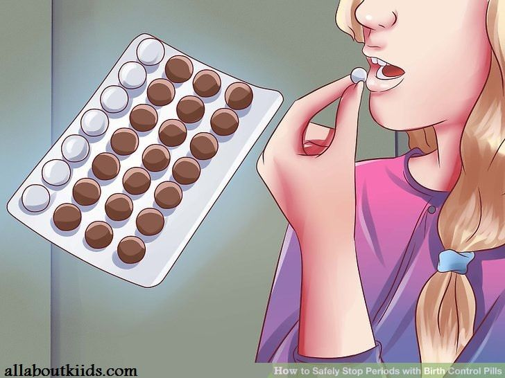
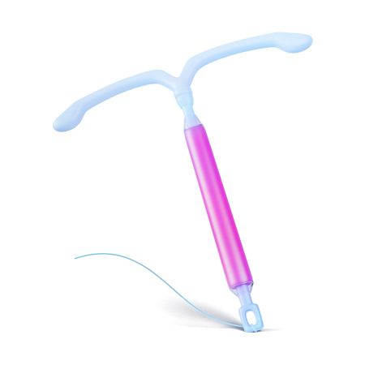
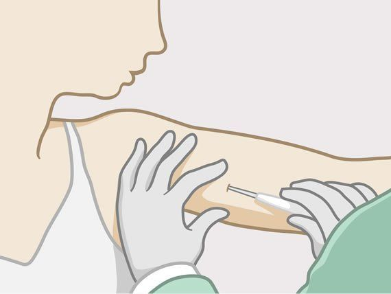
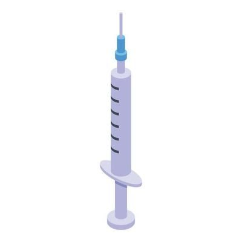
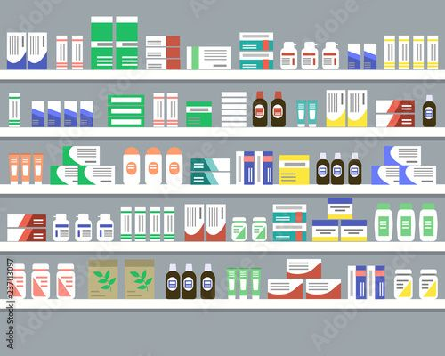
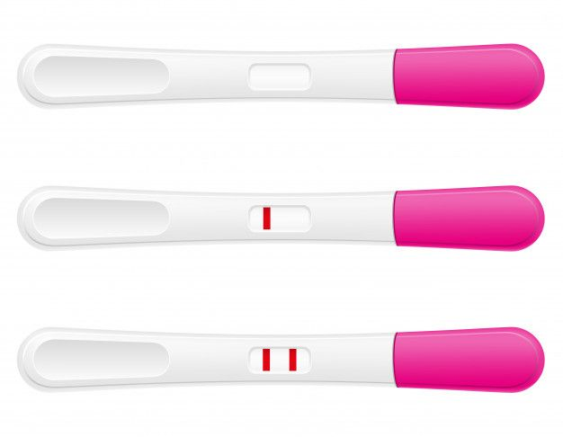
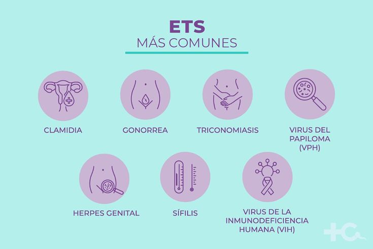
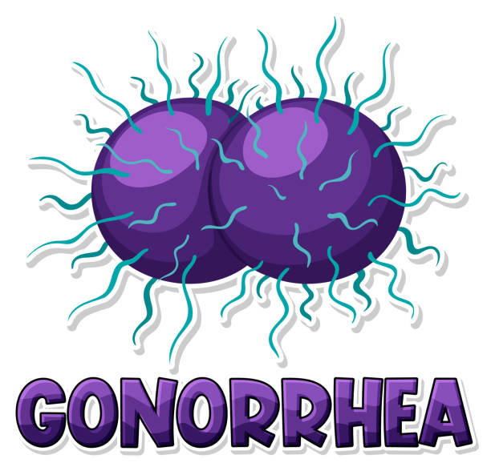

Brindamos atención integral a la salud de adolescentes, con servicios médicos y educativos sobre salud sexual y reproductiva.
Hospital San Andrés de Caracollo
El Hospital San Andrés ha sido un pilar de la salud en Caracollo desde su fundación en 1985. Ofrecemos una atención integral para adolescentes, con especial énfasis en salud sexual y reproductiva. Nuestro hospital está comprometido con el bienestar físico y emocional de nuestros pacientes.
Contamos con un equipo de médicos y personal altamente capacitado que brinda atención de calidad en un ambiente seguro y acogedor.
Servicios que ofrecemos:
Consulta médica general
Atención ginecológica especializada
Psicología para adolescentes
Salud reproductiva y planificación familiar
Vacunas y controles preventivos
Educación en salud sexual
Cirugia
Pediatría
Medicina Interna
Horarios de Atención:
De lunes a viernes, 8:00 AM - 5:00 PM. Sábados de 9:00 AM - 1:00 PM.
Ubicación:
Caracollo, Calle Principal, Frente al Parque Central.
A continuación te presentamos algunos métodos anticonceptivos, su uso y ventajas. Si deseas más información, puedes contactar con nosotros a través de WhatsApp.
Anticonceptivos Orales

Las píldoras anticonceptivas son una de las opciones más comunes y efectivas para prevenir el embarazo. Se toman diariamente, preferentemente a la misma hora, para asegurar su efectividad.
Modo de Uso:
Tomar una píldora diaria durante 21 días, seguido de una pausa de 7 días.
Ventajas:
Altamente efectivas si se toman correctamente.
Regulan el ciclo menstrual.
Pueden reducir el riesgo de ciertos cánceres, como el de ovario.
Desventajas:
Debe tomarse todos los días.
Puede causar efectos secundarios como náuseas o dolor de cabeza.
Preservativos
El preservativo es un método de barrera que no solo previene embarazos, sino que también protege contra las enfermedades de transmisión sexual (ETS).
Modo de Uso:
Colócalo antes de la penetración y asegúrate de que se ajuste bien.
Ventajas:
Protege contra las ETS.
No requiere receta médica.
Fácil de conseguir y usar.
Desventajas:
Puede romperse si no se usa correctamente.
Algunas personas pueden ser alérgicas al látex.
DIU (Dispositivo Intrauterino)

El DIU es un pequeño dispositivo colocado en el útero que previene el embarazo. Existen dos tipos: hormonal y de cobre.
Modo de Uso:
El DIU es colocado por un profesional de la salud en el útero.
Ventajas:
Proporciona protección a largo plazo (hasta 10 años).
Altamente efectivo.
No requiere mantenimiento diario.
Desventajas:
Puede causar dolor o sangrado irregular al principio.
No protege contra ETS.
Implante Subdérmico

Un implante subdérmico es una pequeña varilla colocada bajo la piel del brazo, que libera hormonas para prevenir el embarazo.
Modo de Uso:
El implante se coloca en el brazo por un médico y se debe reemplazar cada 3 años.
Ventajas:
Protección de largo plazo.
No requiere recordatorio diario.
Reversible: puedes quedar embarazada tan pronto como lo retires.
Desventajas:
Puede causar irregularidades menstruales.
Puede requerir una pequeña cirugía para su colocación.
Inyecciones Anticonceptivas

Las inyecciones anticonceptivas son aplicadas cada tres meses y contienen hormonas que previenen el embarazo.
Modo de Uso:
Se aplica una inyección cada 12 semanas.
Ventajas:
Protección a largo plazo.
No interfiere con las relaciones sexuales.
Puede reducir los dolores menstruales.
Desventajas:
Puede causar efectos secundarios como aumento de peso o cambios en el ciclo menstrual.
Parche Anticonceptivo
El parche anticonceptivo se aplica sobre la piel y libera hormonas que previenen el embarazo.
Modo de Uso:
El parche se debe cambiar semanalmente, durante 3 semanas, y se deja una semana sin parche.
Ventajas:
Fácil de usar.
Requiere poca atención después de su colocación.
Puede ser discreto y fácil de ocultar.
Desventajas:
Puede causar irritación en la piel.
No protege contra ETS.
Diafragma
El diafragma es un método anticonceptivo de barrera que se coloca en la vagina para evitar que los espermatozoides lleguen al útero.
Modo de Uso:
Se coloca en la vagina antes de la relación sexual, junto con un espermicida.
Ventajas:
Reversible y no hormonal.
Puede usarse solo o con otros métodos anticonceptivos.
Farmacia
En nuestra farmacia ofrecemos una amplia variedad de medicamentos para cuidar tu salud. Puedes solicitar asesoría personalizada para elegir el producto que mejor se ajuste a tus necesidades.

Contamos con productos relacionados a anticonceptivos, medicamentos para el tratamiento de enfermedades comunes, y productos de salud preventiva.
Precio: de 30bs a 50bs por caja (21a 28 píldoras). Modo de uso: Tomar una píldora diaria.
Preservativos
Precio: 10bs por paquete de 5. Modo de uso: Colócalo antes de la penetración.
DIU
Precio: 140bs (colocación incluida). Modo de uso: Colocado por un ginecólogo.
Implante Subdérmico
Precio: 500bs (colocación incluida).
Embarazo Adolescente
El embarazo en la adolescencia es un desafío tanto para la joven como para su entorno. En el Hospital San Andrés ofrecemos acompañamiento psicológico, ginecológico y obstétrico para garantizar el bienestar de las adolescentes embarazadas.
Ofrecemos orientación en salud reproductiva y planificación familiar para prevenir embarazos no deseados.
Comunicación abierta con padres y profesionales de la salud.
¿Cómo Realizarse una Prueba de Embarazo?
Las pruebas de embarazo se pueden realizar en casa o en un centro de salud. Si tienes sospechas, consulta a un ginecólogo o realiza una prueba de embarazo en la farmacia o el hospital.

Acudir al Centro de Salud:
Es importante acudir al hospital para realizar un seguimiento adecuado durante el embarazo. Podemos ayudarte a obtener tu carnet de control prenatal.
Las ITS son un riesgo importante para la salud, especialmente en adolescentes. En nuestro hospital ofrecemos pruebas, tratamientos y educación en prevención.

Realizamos pruebas rápidas para detectar ITS y brindamos orientación para mantener relaciones sexuales seguras.
La clamidia es una infección bacteriana que afecta tanto a hombres como a mujeres. Es importante diagnosticarla a tiempo para evitar complicaciones graves.
Síntomas Comunes:
Dolor al orinar.
Secreción anormal.
Dolor abdominal.
Prevención:
Uso de preservativos durante las relaciones sexuales.
Pruebas regulares de ETS.
Gonorrea

La gonorrea es una infección bacteriana común. Puede ser asintomática, pero si no se trata puede provocar infertilidad.
Síntomas Comunes:
Dolor al orinar.
Secreción genital.
Dolores articulares.
Prevención:
Uso de preservativos.
Exámenes periódicos.
VPH
El VPH es uno de los virus más comunes. Puede causar verrugas genitales y, en algunos casos, cáncer cervical.
Síntomas Comunes:
Verrugas genitales.
Cambios en el cuello uterino.
Prevención:
Vacunación contra el VPH.
Uso de preservativos.
Prevención General de las ETS
Uso de preservativos.
Exámenes regulares de ETS.
Vacunación contra el VPH y la hepatitis B.
Preguntas Frecuentes
¿Cómo puedo reservar una cita médica?
Para reservar una cita médica, solo debes completar el formulario en nuestra página y elegir la especialidad, fecha y hora que prefieras.
¿Cuál es el horario de atención?
Nuestro horario de atención es de lunes a viernes, de 9:00 a 12:00 y de 14:00 a 17:00.
¿Se pueden hacer consultas online?
Actualmente, las consultas son presenciales, pero estamos trabajando para ofrecer atención en línea en el futuro.